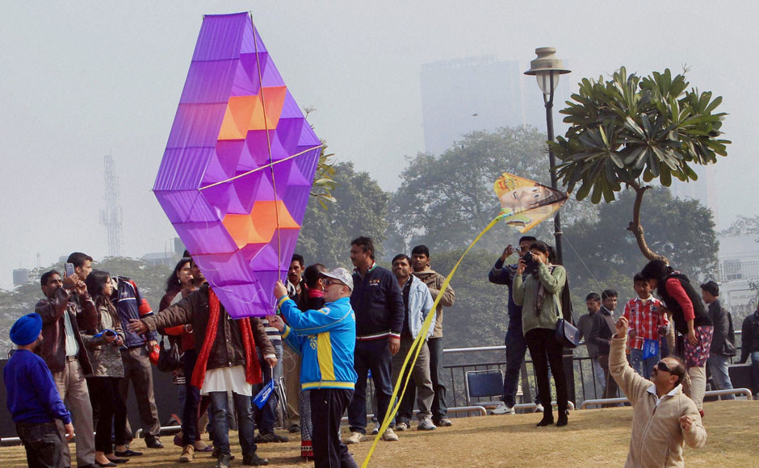

Being a major alpha level city, Delhi is known for its festivals and cuisine of different Indian states.
Festivals
The key festivals are:
International Kite Festival - People from all over the world come to fly kites in Delhi. This event takes place mid-January of every year.
Qutub Festival – Indian classical music and dance shows by reputed artists are held by the monument. It is usually held in November or December of each year.
India Art Fair – One of India’s largest annual art events showcasing modern and contemporary art from worldwide. It is scheduled to be held in late January/early February.
International Mango Festival – All about India’s national fruit! 500+ varieties of mangoes are usually displayed, along with activities like mango quizzes, a mango eating tournament, etc. This event takes place between the months of June and July.
Festival Pictures

Figure 1 - A person flying a large kite at the International Kite Festival. Figure 2 - A concert at the Qutub Festival. Figure 3 - The crowd at the Art Fair that takes place in Delhi each year. Figure 4 - Contestants participating in a mango-eating contest at the Mango Festival.
Food
Experience a wide range of Indian food at:
Dilli Haat - A paid entrance open-air food plaza and craft market
National Street Food Festival - Street food from many Indian states that runs for 3 days
Figure 5 - One of the market areas in Dilli Haat.Figure 6 - The interiors of Veda, a North Indian restaurant located in Connaught Place, Delhi. Figure 7 - The interiors of Bukhara, a luxury restaurant located in the ITC Maurya hotel.